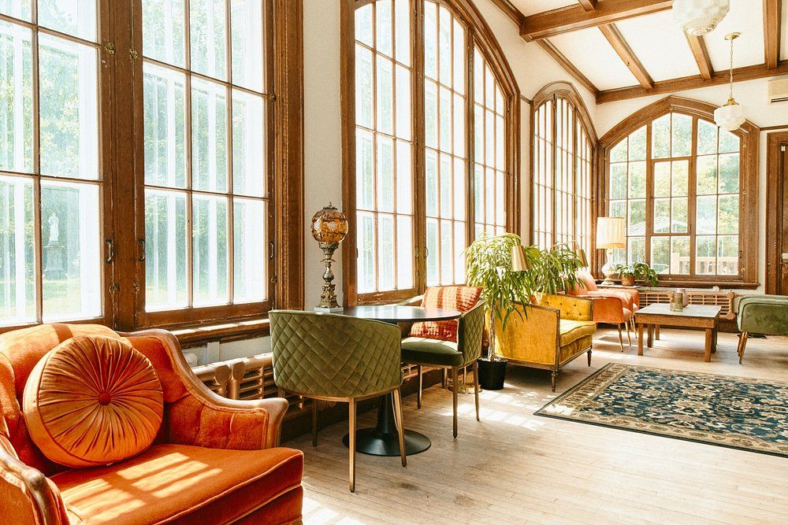

お店のこと
izumicho cafeは、大阪府吹田市泉町にあるカフェです。Instagramのプロフィールでは「ピアノとギターと大きな窓があるcafe」と紹介されています。
お店ではピアノやギターの演奏の様子が投稿されており、初心者向けのウクレレ・ギター教室のご案内もあります。2022年7月のオープンとされています(Instagramの投稿などから確認)。
店名の意味や開業の経緯、オーナー様の想いの詳細は確認できていません。実際のお話をうかがったうえで、このページに反映します。

メニュー
Instagramの投稿には、スコーン、クッキー、パイなどの焼き菓子や季節のお菓子が見られます。以下の写真はフリー素材のイメージで、実際のメニューではありません。


| メニュー・価格 | 準備中 |
|---|---|
| 営業時間 | 準備中 |
| 定休日 | 準備中 |
| 電話 | 準備中 |
光とおと(イメージ)
窓辺の光、湯気、しずくなど、ピアノと大きな窓のあるカフェの雰囲気に合わせて選んだイメージ写真です。


口コミ(イメージ例)
以下は制作側が作成したイメージ例であり、実在のお客様の声ではありません。
イメージ例
大きな窓から光が入って、ゆったり過ごせそうなカフェです。ピアノのある空間でお茶の時間を楽しみたいです。
イメージ例
焼き菓子と飲み物の組み合わせが気になります。お休みの日にゆっくり立ち寄りたいです。
イメージ例
演奏や教室の情報もあって、音楽が好きな人にうれしいお店だと思いました。
アクセス
| 所在地 | 〒564-0041 大阪府吹田市泉町５丁目１ |
|---|---|
| 電話 | 準備中 |
| 営業時間 | 準備中 |
| SNS | Instagram @izumicho_cafe |